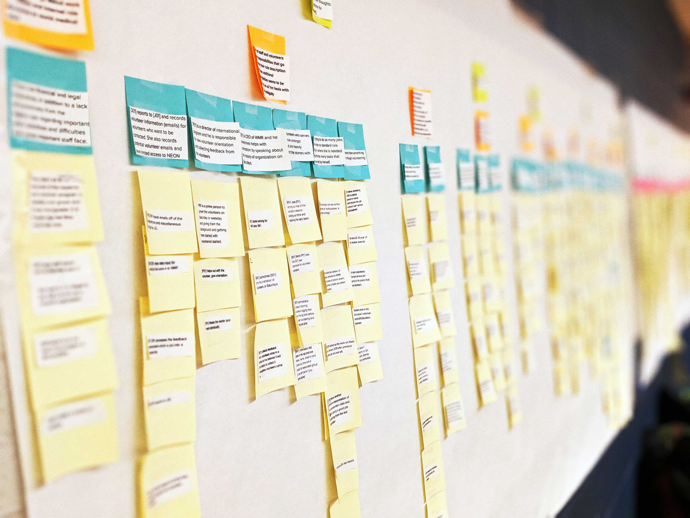
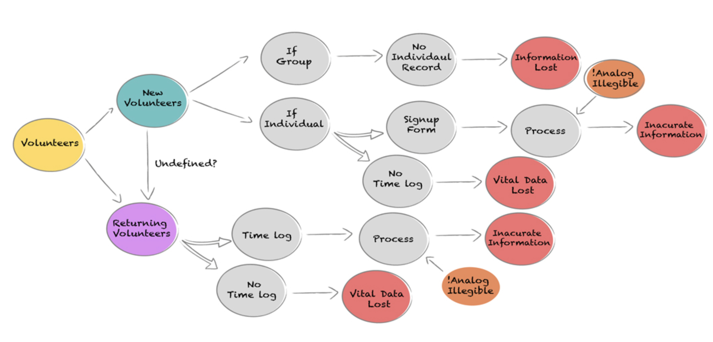
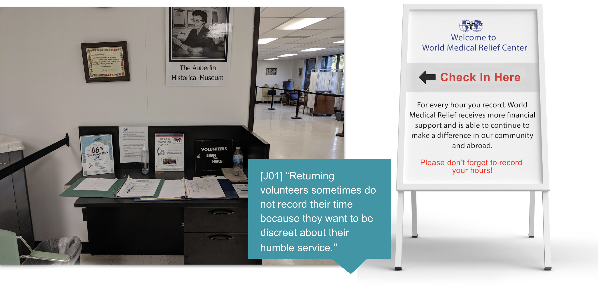
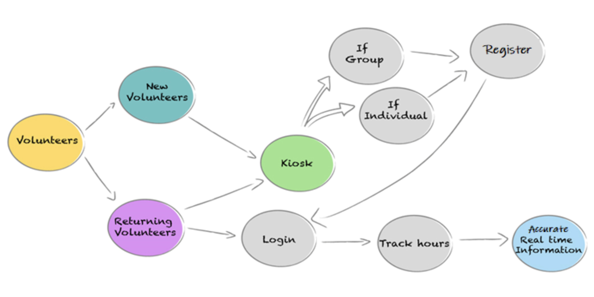

World Medical Relief
World Medical Relief (WMR)is a non-profit organization centered on the local and global distribution of medical supplies.
Problem Statement
This project is a classic example of a paper to digital transformation. There are many challenging factors we must consider, such as tracking individual and group volunteers, one-time or returning volunteers, costs, and a limited number of staff members with a lack of technical training. Volunteers sign up by either phone or email, and when they come to volunteer, they are required to complete a form on paper. The handwritten way is hard to read at times; as a result, it hinders future communications.
Goals
Every year 3000 volunteers take part in the process of helping the community, but the volunteer management system is outdated. This project is a classic example of a paper to digital transformation. There are many challenging factors we must consider, such as tracking individual and group volunteers, one-time or returning volunteers, costs, and a limited number of staff members with a lack of technical training. Volunteers sign up by either phone or email, and when they come to volunteer, they are required to complete a form on paper. The handwritten way is hard to read at times; as a result, it hinders future communications.
WMR Physical Site Observation
The current volunteer management system is inefficient. They have Analog sign-up process and inefficient processing, causing them to capture inaccurate Information, which is leading to Lose vital Information about volunteers. They are also losing opportunities to communicate with volunteers.
Interviews
We began our investigation with an initial interview of our client contact, and received a general overview of the volunteer management process and staff involved. We noted four issues that our client repeatedly emphasized: how volunteer hours can be tracked, how different types of volunteers can be accounted for, how WMR can follow-up with volunteers, and issues with the paper-based documents. With these points in mind, we began to develop a set of interview protocols containing questions for our interviewees. Generally, our protocols covered the following points: 1.What their role entails: what they do; how they do it; how long it takes to do it? 2. Difficulties, challenges, and frustrations they experience? 3. What their views are regarding updating the current system to a technological one?
With our recommendations, World Medical Relief hopes to write a grant proposal for funding of hardware and possibly software to upgrade the volunteer management process.
“Some volunteers are not recording their time because they want to portray themselves as being humble. They thought it was a virtue to serve without letting other people know". This is a serious misunderstanding that negatively impacts the organization, and they need a technology integration in the process as a reminder for returning volunteers to realize how important it is to track their hours.”
Affinity Wall
Once we completed the interview stage, we moved on to the next stage of developing an affinity wall. Creating an affinity wall, which is a poster containing all of our notes, entailed us carefully analyzing and grouping notes together based on shared themes and content. Once the notes were grouped together in relevant patterns, we proceeded to write summaries for each group of notes, striving to highlight a central idea that the notes presented.
Findings
As we came to better understand the current workflow through our interviews and affinity wall analysis, we realized that there were different facets of the complications that were presented to us. In this section, we will discuss these three key facets and provide recommendations. The points are as follows: 1. Analog Volunteer Management System. 2. Lack of Structure in Role Division. 3. Lack of Internal Communication. Each finding contributes to the complication to varying degrees, but they all represent fundamental issues with the current system at WMR.
Flowchart of Current Volunteer Management Process
currently there are too many different ways to process volunteer information depending on the type of volunteers. Even then, there are no clear distinction between each way of the process which causes confusion and delay among the staffs who process the volunteer information. All of the different ways of processing the volunteer information experiences challenges to some extent which leads to missing or inaccurate information.
Recommendations
In our initial meeting with our client contact, we were asked to look into a software solution that provides a streamlined, all-in-one solution that ensures a positive experience for staff and volunteers alike. In searching for a viable solution, we researched various volunteer management systems, as well as issues pertinent to WMR’s volunteer demographic. In selecting our recommendations, we considered cost, ease of integration, and the number and types of features available in the software. We spoke to representatives from two software companies, and conducted thorough background research on another. We Recommended to set up Kiosks and an iPad, can be brought in to replace the current sign in station. VolunteerHub represents our primary recommendation for cloud based software. It contains features that are essential to WMR’s volunteer management, as well as providing volunteers with new, dynamic options for applying and checking in. Our second recommendagrs was Google Forms is a simple, inexpensive platform that contains various features that would benefit WMR. We are recommending this as a budget-friendly option but it has limited features and can be used if they have limited funds.
It is important to note that technology will only go so far in ensuring that volunteers record their hours. Therefore, we recommend that a large and clear sign-board reminding volunteers to sign in board to be placed near the check-in station. We suggest adding a message as shown in the board above: “For every hour you record, World Medical Relief receives more financial support and is able to continue to make a difference and saves more lives.” We believe a message along these lines will encourage returning volunteers to sign in and record their hours. Moreover, we believe it would be beneficial to volunteers and staff if the sign-in station is moved from its current location to the main reception area. The main reception area is the first thing that volunteers see when they walk into the building, and so they will be immediately aware of the sign-in requirement. Additionally, having the sign-in station be near the reception area will allow receptionists to be immediately available for guidance should any volunteer need it.
Flowchart of After Integration of our Recommendation
Our suggested software solutions are intended to smooth out the volunteer management process at WMR. Where before the system involved manual processing and missing information, the suggested systems can provide WMR with the opposite effect.
